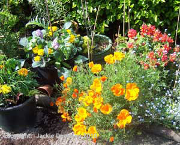

Disposing of waste costs money. if we can put that waste to another use, or change it in some way to make it a resource, we can not only save money but even make some cash. we also help the enviroment as what may take the place of a purchased good, so it is a double win.
Great ways to upcycle!
There are millions to be creative with re-using things that have become unusable or just tried looking- don't throw them away or re-cycle them you have thought about re-usin. To add the brilliant ideas in the video, above, here are a few more ideas.
| Type | Item | Use |
|---|---|---|
| plastic | Plastic dustbins | Plastic dustbins used to grow a mix of vegetablesand flowers- Growing vegetables such as tomatoes, |
| Yoghurt/margarine tubs | Sowing seeds and potting young plants | |
| Transparent water bottless | place over tender plants in the spring to act as mini greenhouses | |
| Glass | Glass jars | Making jam, mincemeat, flower vases |
| Textiles | Old sheets, vets, dusters, dishcloths, etc. | Dusters, dishcloths etc. |
| Old clothes | Re-vamp by adding decorative ribbons, buttons, etc. |
Not so frequently asked Questions
What can i do with an empty toilet paper roll
123
Can i compost dead animals?
i dont know
Can I eat compost?
No, as you will die
can i compost dead zombies?
12345